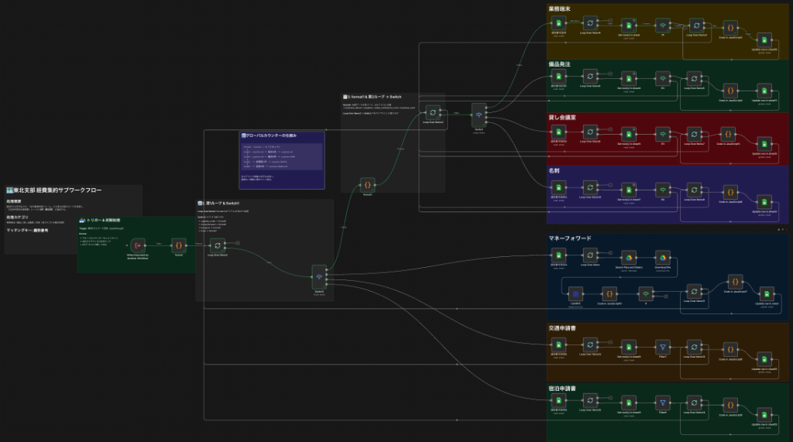
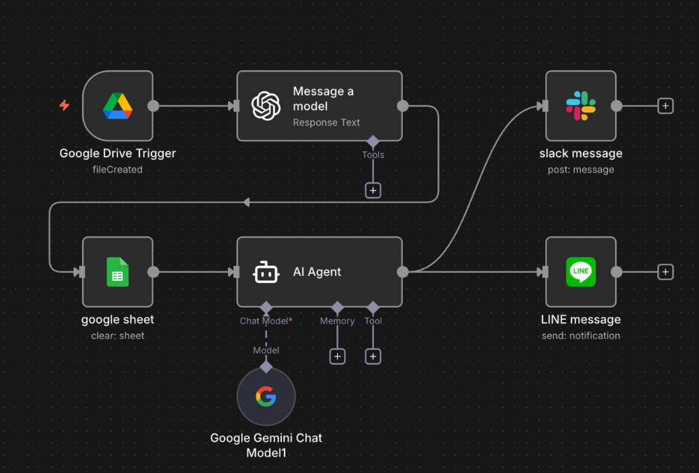

ホールディングス企業（従業員700名）の経理DXをリード。
PDFをドライブに入れるだけで経理が終わる。
AI × n8nで業務フローごと再設計し、あなたの時間を本業に戻す。
開発もAI駆動。だから速い。だから安い。
人手不足は構造的な問題です。採用しても教育に半年、覚えた頃に辞める。派遣を頼めば月50万。でも事務作業の中身を見てください — PDF読んで転記、データを集めて整理、承認をもらって入力。これは「人がやるべき仕事」ですか？
事務員の平均月給（社保含む）
¥300,000超/月
年間 ¥3,600,000
派遣社員のコスト
¥400,000〜/月
年間 ¥4,800,000
SIerに自動化を頼んだ場合
¥500,000〜/月
年間 ¥6,000,000〜
自動化ワークフローの場合
¥200,000〜/本
+ 保守 ¥50,000/月
作り切り。毎月の人件費ゼロ。
→ 人を雇えば毎月コストが積み上がる。KIRAの自動化ワークフローなら、一度作れば動き続ける。
KIRAは単にツールを入れるのではなく、業務フローそのものを見直します。「今の業務をそのまま自動化」ではなく、「AIとn8nが前提の最適な業務フロー」に再設計。結果、PDFやデータをドライブに入れるだけで事務処理が完了する世界を実現します。
現場の事務フローを徹底ヒアリング。「何をやっているか」だけでなく「なぜそうしているか」まで分解。本当に必要な作業と、惰性で続けている作業を仕分けます。
n8n × AI前提の最適な業務フローを提案。「人がやるステップ」を最小化し、PDF投入→AI読取→自動入力→通知のように、人はデータを置くだけの流れに組み替えます。
Claude Codeで爆速開発。要件定義からワークフロー構築まで、AI駆動で従来の数分の一の期間で納品。構築後も月次で改善サイクルを回し続けます。
KIRAの開発工程そのものがAI駆動です。従来のシステム開発は「人が考え、人が書き、人がテストする」。KIRAはClaude Codeで要件定義を構造化し、n8nのワークフローをAIが生成し、テストまで自動化する。だから、従来3ヶ月かかる開発が2〜4週間で終わります。
1つのAIに依存しません。各AIの得意領域を見極め、選定し、最適な組み合わせで業務自動化を設計します。
ワークフロー自動化エンジン
全自動化の中核。500以上のSaaS/APIを接続し、データの流れを設計・実行する
AI駆動開発
要件定義の構造化、n8nワークフロー生成、テスト自動化。開発速度の源泉
高度な文書理解・生成
PDF解析、契約書読み取り、複雑な判断が必要なデータ分類
汎用AI処理
データクレンジング、テキスト変換、フォーマット標準化
大規模データ分析
大量データの傾向分析、異常検知、レポート生成
ナレッジ管理
社内マニュアルのAI化。「聞けば答えてくれる業務マニュアル」の構築
リサーチ・情報収集
業界動向の自動調査、競合分析、市場データ収集の自動化
Google Workspace連携
スプレッドシート・フォーム・カレンダーの自動化。GAS × n8nで完全統合
n8n ワークフロー画面（実際の構築例）


実際の業務自動化ワークフロー。ノードをつなぐだけで複雑な業務プロセスを自動化。
こんな業務が、AIで完全に変わります。
実際の導入プロジェクトから生まれた成果です。
経理部門の8業務プロセスが手作業。経費承認に月28時間、全国支部データの集約に数日。
n8n × AI で経費マスタ自動入力・会計ソフト連携・全国データの並列自動集約を構築。
健康診断の事務業務（紙データの転記・管理）に膨大な時間がかかっていた。
紙 → PDF → ドライブ投入の流れを構築。AIでデータ抽出し管理システムに自動登録。
事務処理時間の大幅削減。担当者は本来の店舗運営業務に集中可能に。
社内DX基盤の確立。AI活用セミナー11種類の運用体制を構築。
自動化のゴールは「楽になる」ことではありません。事務作業に費やしていた時間を、本業に戻すことです。
現在の事務フローをヒアリング。「何に何時間かかっているか」を可視化。自動化ROIの概算を提示。
AI × n8n前提の最適業務フローを設計。「人がやるステップ」を最小化した新しい業務の形を提案。
Claude Codeで要件を構造化し、n8nワークフローを構築。顧客環境を再現してテスト。
実データで動作検証。現場担当者への操作説明。「ドライブにファイルを置くだけ」の世界を体験してもらう。
エラー監視・改善レポート・追加ワークフロー構築。業務が変われば自動化も進化する。
開発工程そのものがAI駆動だから実現できる価格。人月計算ではなく、成果物に対する報酬。
必要なのは「人件費」ではなく、「仕組みへの投資」です。
1業務プロセスの自動化（単発）
人月ではなく、仕組みへの投資。一度作れば、ずっと働く。
AI駆動 業務自動化コンサルタント
IT企業でエンジニア経験を経て独立。ホールディングス企業（従業員700名）の経理DXプロジェクトにリードエンジニアとして参画。n8n × Claude Code × 各種AIを駆使し、全国データの自動集約、経費処理の自動化を実現。「ツールを入れる人」ではなく「業務をAIで再設計する人」。初回ヒアリングは完全無料。資料請求・営業電話なし。
「事務作業は人がやる仕事じゃない。
人は、人にしかできない仕事をするべきだ。」
無料のヒアリングで、御社の事務作業のうち「AIで自動化できる部分」と「削減できる時間・コスト」を可視化します。初回ヒアリングは完全無料。資料請求・営業電話なし。